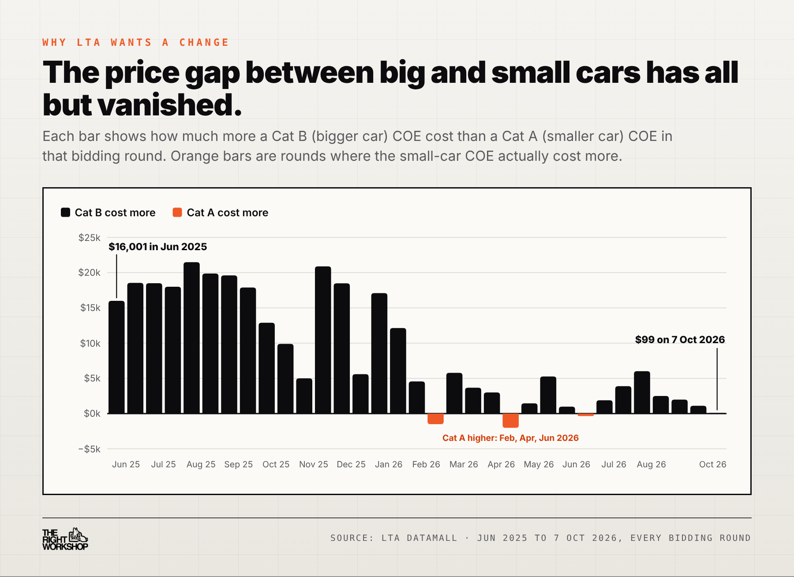

LTA wants to merge Cat A and Cat B into one COE category for all cars, then add a rebate of up to $15,000 or a surcharge of up to $15,000 depending on how expensive the car model is. The COE Cat A and Cat B merger is only a proposal for now. Public feedback opened on 8 October 2026 and closes on 2 November 2026 at 11.59pm, and every bidding exercise until LTA decides runs on today's rules.
Before you can drive a new car in Singapore, you need a Certificate of Entitlement (COE). It is a 10-year permit to own a car, and there are only a fixed number available each month. People bid for them twice a month, and everyone who wins in a round pays the same closing price.
Right now, cars are split into two groups for this bidding. Smaller, less powerful cars bid in Cat A. Bigger or more powerful cars bid in Cat B. The idea was simple: someone buying a family hatchback should not have to outbid someone buying a luxury saloon.
A few terms you will see in this story:
Under the COE Cat A and Cat B merger, both groups of car buyers would bid in one passenger car category. Every buyer in a round would see the same COE price.
The feebate then sorts buyers by the value of the car they choose. LTA would take each model's median OMV from past registrations, rank all the models from cheapest to most expensive, and split that ranking into bands. Where your model lands decides whether you get money off, pay extra, or pay the COE price unchanged. The bands would be reviewed and published every year.
LTA has put two versions on the table:
In LTA's worked example using 2025 registrations, a Toyota Sienta would get a $15,000 rebate under three bands, or $7,500 under five. Mothership's report of the same illustration placed the Honda Freed and Volvo EX30 in rebate territory, with the Tesla Model 3, BYD Sealion 7 Performance and Mercedes-Benz A180 possibly facing a surcharge. LTA describes these placements as indicative.
The feebate idea was raised by Edward Chia, deputy chair of the Government Parliamentary Committee for transport, at a focus group in July 2026. More than 200 members of the public, academics and industry representatives shared views before LTA published the paper.
The split between Cat A and Cat B only works if big cars pay noticeably more. That stopped happening this year.
In June 2025, a Cat B COE cost $16,001 more than a Cat A one. By the 1st bidding exercise of October 2026, which closed on 7 October, Cat A finished at $130,001 and Cat B at $130,100.
Cat A has even cost more than Cat B three times in 2026: in the 2nd bidding exercises of February, April and June. Cat A COE prices have stayed above $100,000 since July 2025.

Minister Jeffrey Siow, who called for the review during the Budget debate in March, said carmakers have been adjusting the specifications of their cars to fit within Cat A. Dealers have pointed to other causes too: buyers moving down from Cat B, premium electric cars that qualify for Cat A, and shifts in quota supply between the two categories. Whatever the mix, the result is the same. Engine size and power no longer sort buyers by budget, so LTA wants to sort them by the value of the car instead.
Nobody knows where a merged COE price would settle. To make the numbers concrete, the example below assumes it closes at $130,000, close to where both categories are today.

Under that assumption, a buyer of a cheaper model in the lowest band would pay $115,000 for the COE, about 11.5% less than the headline price. A buyer of a pricier model in the top band would pay $145,000. Most mid-range buyers would pay the $130,000 unchanged.
The other half of the picture is the pool itself. In the latest round, Cat A offered 1,232 COEs and Cat B offered 945. A merger would put all 2,177 into one pool, with every car buyer bidding for the same certificates. How the bidding behaves in that bigger pool is something nobody has seen yet.
LTA has said COE prices will still be set by demand and the number of COEs available. The review is about how cars are grouped. It sets no price target.
Experts interviewed by The Straits Times said the effect on prices is uncertain. Buyers of high-OMV cars might rush to buy before any surcharge starts, which could push prices up in the short term. Other changes already in motion, such as the vehicle emissions scheme and lower deregistration payouts, could cancel out some of what a rebate saves. Some economists expect COE prices to ease anyway as supply steadies towards the end of the decade.
A few ideas raised during the review did not make it into the proposal, including priority for families with children and a separate category for ride-hail cars.
Three questions affect people who are not buying a new car right away.
Cat E (Open). LTA's options are to remove the Open category or keep it for cars only. Keeping it for cars would give urgent buyers a backup route while protecting COE supply for commercial vehicles. Cat E closed at $137,000 on 7 October.
COE renewals. LTA is asking whether the rebate and surcharge should also apply when you renew your COE. Renewal is paid at the PQP for your car's category, so a merged category, with or without a feebate, could change that bill.
Existing owners. LTA said it could consider transitional arrangements for current owners if the merger goes ahead. No details have been published.
If your COE runs out in the next year or two, our COE renewal vs scrap guide walks through the numbers under today's rules.

If you are buying a car in the coming months, today's Cat A and Cat B rules apply to every bidding exercise until LTA announces otherwise. The 2nd bidding exercise of October opens on 19 October, and the latest prices are on our COE results page. Our Cat A vs Cat B guide explains which category your shortlist falls into today.
If you want a say, LTA is collecting feedback at go.gov.sg/coe-pcd-feedback until 2 November 2026, 11.59pm.
Not by design. LTA says prices will still come from bidding. Buyers of cheaper models could pay less through the rebate, and buyers of pricier models could pay more through the surcharge.
Only when you renew your COE, and only if LTA decides the feebate applies to renewals. That question is still open, and LTA has said it could consider transitional arrangements.
No date has been announced. LTA will share its findings and recommendations in the first half of 2027.
It would depend on where your model's median OMV ranks against other models. LTA would publish each model's band every year. Until the final design is out, the Sienta, Freed and EX30 examples are the best guide to what sits at the cheaper end.
That depends on the car. A buyer eyeing a cheaper model might gain from a rebate later. A buyer eyeing a pricier one might pay more later. Nobody yet knows the final bands, the start date or where the merged price would settle, so plan around today's prices.
Whichever COE system you end up buying under, the value of the car you pick will matter more than before. Before you commit to a new or used car, our pre-purchase inspection tells you what you are paying for.
We'll track every update on our news feed, and you can also check the OneMotoring portal for official notices.